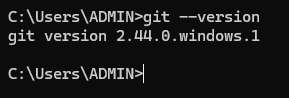

To use Git, we need to first download and install it. To download Git, visit https://git-scm.com/download and download the version for your platform whether it is macOS or Windows or Linux. Run the downloaded installer, leave all the default options during installation.
Confirm whether you have Git installed.
To confirm whether Git was installed successfully:
Open command prompt in windows or terminal in mac/linux.
Run the command:
git --version
If a version number is returned, Git is installed on your system. If you receive any other output, Git is not installed.

Version number returned meaning Git installed.
Configuring Git
Now that Git is installed, it's time to configure basic information. We don't need to 'register an account' to use Git, however, we need to tell Git who we are. We do this by providing our username and email address.
Configuring your username
Open command prompt or terminal depending on your platform.
Run the command:
git config --global user.name "USERNAME"
Replace USERNAME with your preferred username, for example, if your username is codeme254:
git config --global user.name "codeme254"
Configuring your email address
Open command prompt or terminal depending on your platform.
Run the command:
git config --global user.email "EMAIL_ADDRESS"
Replace EMAIL_ADDRESS with your email address, for example, if your email address is dennis@gmail.com:
git config --global user.email "dennis@gmail.com"
Verifying the configuration
We can verify whether the username and email are set correctly. To do so:
Open the command prompt or the terminal.
To verify the username, run the command:
git config user.name
The command should return the username that you set during the configuration process.
To verify the email address, run the command:
git config user.email
The command should return the email that you set during the configuration process.